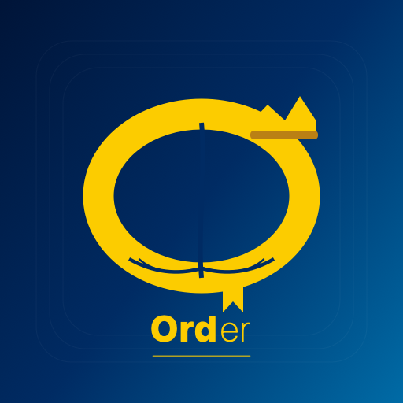
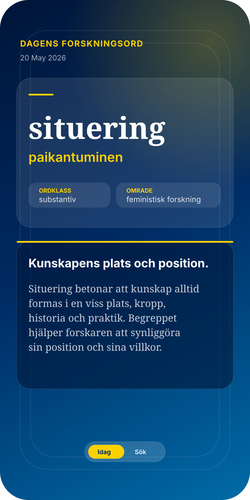
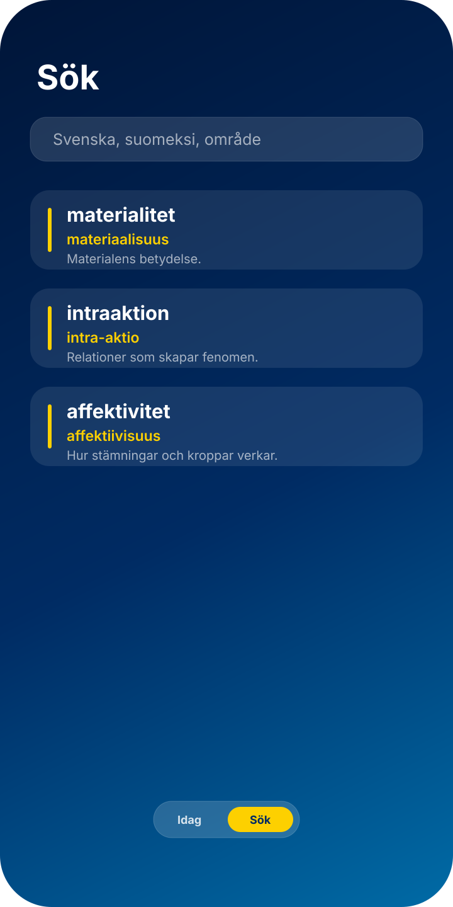
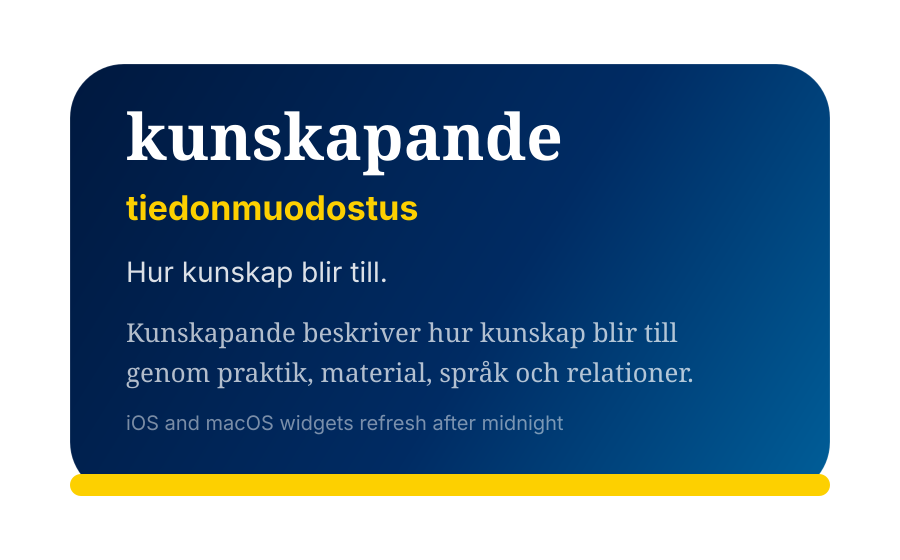

Daily and deterministic
The same word appears across app and widgets for the same local calendar day.

OrderSwedish research vocabulary, one day at a time
A calm, royal-blue dictionary app for humanities research terms in Swedish, with Finnish translations, clear explanations, widgets, and offline access.

The same word appears across app and widgets for the same local calendar day.
Terms cover humanities, art education, posthumanism, feminist research, and related fields.
The vocabulary ships inside the app, so the daily word works without network access.
Screenshots
Full-screen royal Swedish styling, compact navigation, and readable word cards.


Apple ecosystem